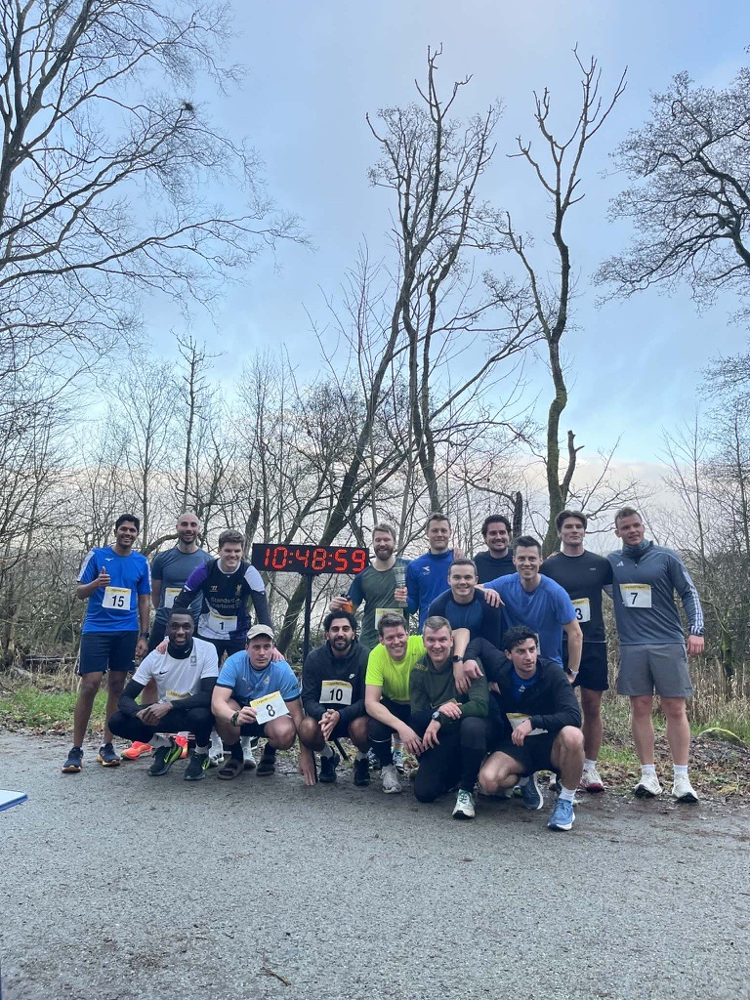

2025
Karli overlegen + ny stevnerekord
I 2025 var et nytt steg opp i seriøsitet for Legendeløpet. Undertegnede har fått hjelp fra Time and Date-grunnlegger Steffen Thorsen til å sette opp registrering i EQ-timing, bestille startnummer, låne tidtakerutstyr (fra Spirit) og låne digital klokke. Nå er det virkelig et "veldig seriøst lavterskelløp"
På startstreken i år sto det en gjeng med en hel drøss av imponerende resultater den siste tiden. For å nevne noen. Erlend Melleby løp en imponere 1:26:55 i køben, det er så vidt meg kjent den nest beste halvmaratontiden fra en deltaker. Bare slått av vår egen Legende Karl Magnus Torgrimsen som i samme løp kom i mål på tiden 1:25:38.
Det var disse som tok teten i starten med Dennis, Erik og Håkon på jakt bak. Karli var det aldri noen som så igjen og han løp inn til en solid løyperekord på 10:36. Erlend (11:01) falt fra og måtte si seg tapt til Erik (2p 10:53) og Dennis (3p 11:00). Håkon (11:16) klarte ikke holde tempo til sistnevnte og heller ikke ta igjen Erlend. Bak "teten" kom det en gjevn gruppe bestående av Njål (11:44), Eskild (11:48) med et enormt comeback, Runar (11:53), Håvard (11:54) og Adams (12:01).
Truls Gudmundsen (12:48) meldte på forhånd 11:30, vet ikke helt hva som skjedde der. Ellers er det nok Eskild som presterer sterkest her. Hele 1:49 bedre enn fjordåret. Dette viser at trening virker og satser på at alle blir inspirert til å skjerpe seg litt ekstra til neste år.
1.plass: Karl Magnus Torgrimsen 10:36
2.plass: Erik
Engebretsen 10:53
3.plass: Dennis Zhilivoda 11:00